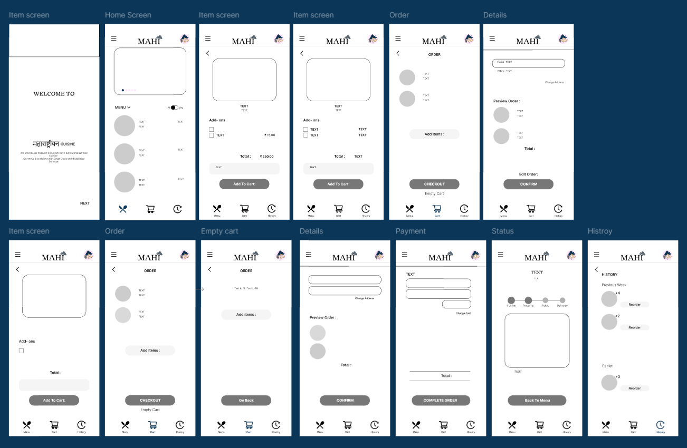
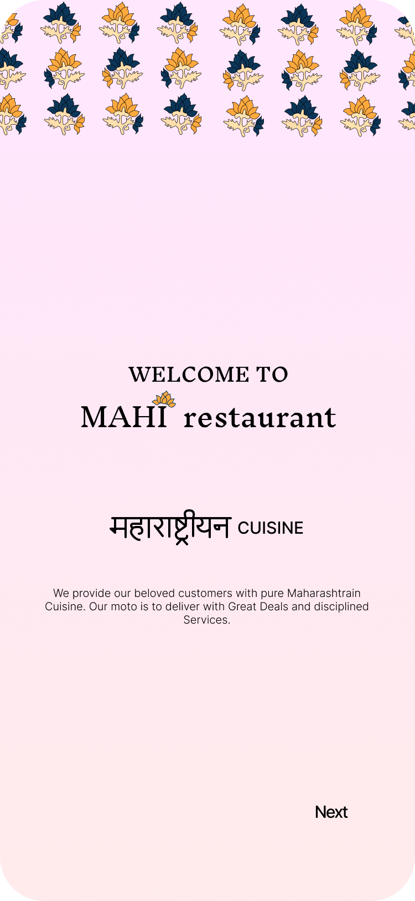
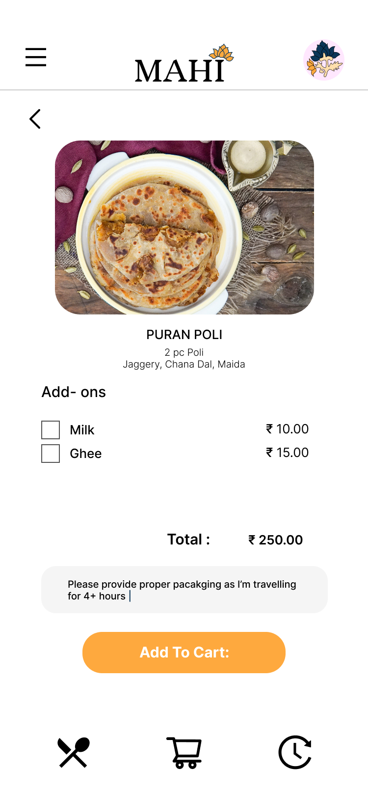
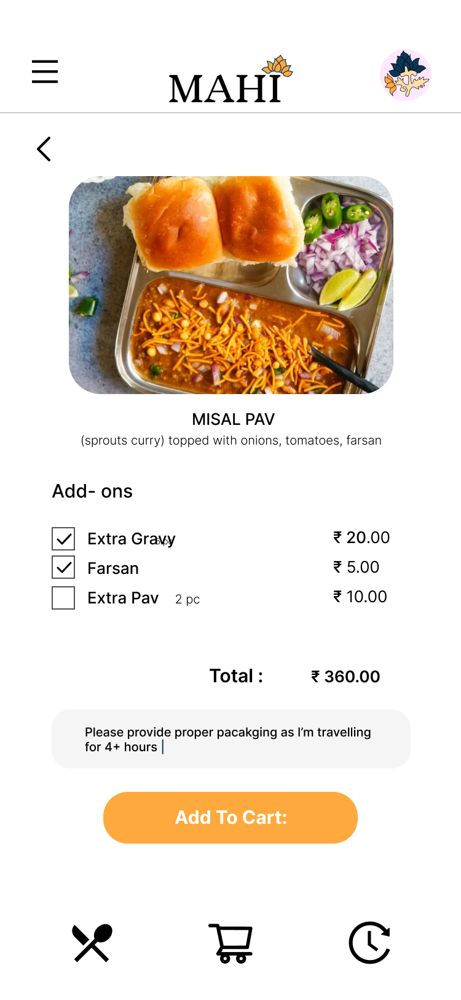
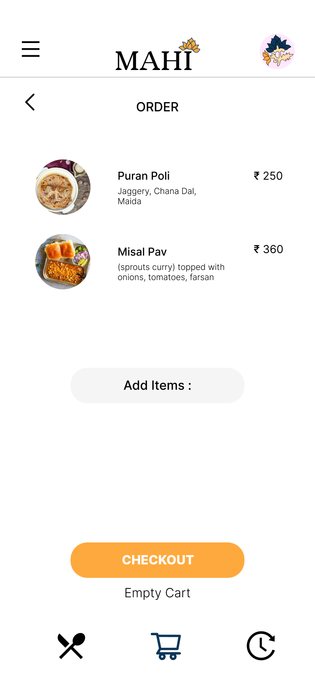
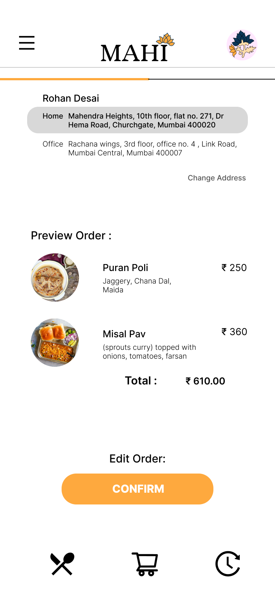
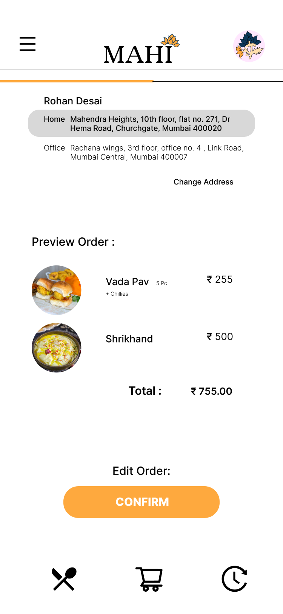
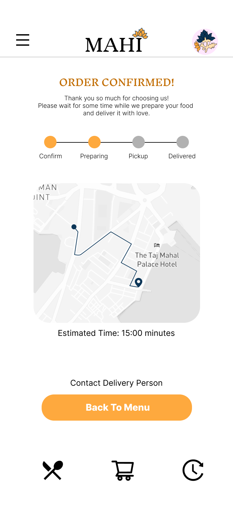
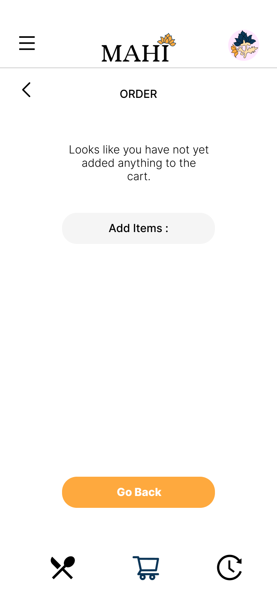

Case Study — UX Design
Mahi
Restaurant
An online ordering app that makes it easy to customise your meal, check out fast, and track your delivery in real time. Designed for Google’s UX Certification with a focus on accessibility and user research.
The Problem
Less customisation, longer checkouts.
Existing food ordering apps gave users little control over ingredients and buried checkout behind too many steps. Mahi was designed to fix both — letting customers customise freely and get to confirmation in seconds.
User Research
Through interviews and surveys with daily food app users, three core pain points emerged. Users with busy schedules struggled most with time constraints: long delivery waits, no advance planning tools, and slow checkout flows made the experience frustrating. Accessibility was another recurring issue — users couldn’t reach delivery personnel, estimates were unreliable, and restaurant options felt limited. Finally, interface and usability problems including text-heavy menus, confusing layouts, and difficulty finding specific dishes made ordering feel like a chore. These findings directly shaped the design direction for Mahi.
Personas
I conducted interviews and took numerous surveys to understand daily users who order food online and don’t have time to cook their meals. I observed that people with a tight schedule often order online and need their orders to reach on time and know the delivery location and estimated time.
Sugi
Age: 18
Hometown: Mumbai, Maharashtra
Goals
- Want Fresh Food
- Can Use any Payment Method
- Time saving
Frustrations
- It’s difficult to wait long while receiving order
- Late delivery ruins my schedule timings
- It’s tough to locate the order I placed last week
Sugi is about to complete her HSC Education. She loves classical dances and is an Extrovert. She attends Dance Classes, Swimming Classes and Tuitions everyday and often prefers ordering food online due to her packed schedule.
Bucky
Age: 22
Hometown: Mumbai, Maharashtra
Goals
- Can get food on time
- Need proper cost prices on items
- Tracking food properly
Frustrations
- Vegetarian & Non-Veg food don’t have correct indications
- Different prices on App & Restaurant
- Delivery person doesn’t answer calls
Bucky is a Physics Student and has been a bright student. His maximum time is spent learning new skills — he takes a half-hour break sometimes, so he prefers getting food on time and should be able to order faster through the app.
IMAGINARY NAMES TO HIDE IDENTITY
User Journey Map — Sugi

User Journey Map — Bucky

Wireframes

After Usability Study








Key Insights
Frequently used icons make it easy for all users to navigate without reading labels.
Adding alt texts for images and feedback after every order helps users and developers understand each other better.
After use, the app was commended for its easy usability, quick ordering flows, and delivery tracking system.
Considering every type of user in every situation is critical. Apps should solve problems — not create them.
Feedback is a must. Every round of feedback provides a new insight that helps improve the app at every step.
Constant updates and surveys will enhance user satisfaction and attract more customers over time.